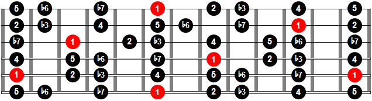
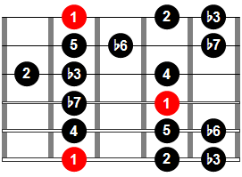
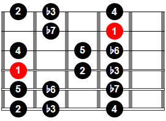
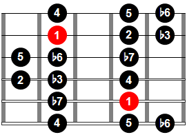
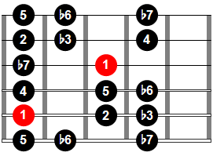
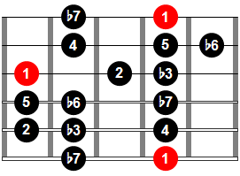

Existen tres escalas menores diferentes: la escala menor, la escala menor armónica y la escala menor melódica. Cada una tiene su propio diseño de grados, pero todas comparten una característica que las diferencia de la escala mayor: el intervalo entre la 1ª y la 3ª notas de la escala es siempre de un tono y medio. Este intervalo se llama 3ª menor para diferenciarlo del de 3ª mayor (dos tonos) característico de la escala mayor.
Las escalas menores se diferencian unas de otras según que el 6º y 7º escalones estén alterados o no, originando las escalas menor armónica y menor melódica. Será más fácil comprender el principio y formación de las escalas menores si se empieza por mirar cómo se relaciona la escala menor con la escala mayor, y luego se pasa a ver cómo se altera para producir las escalas menor armónica y menor melódica.
Así como el modo jónico fue el predecesor de la escala mayor, la escala menor se deriva del llamado modo eólico. Estos dos modos eran escalas diatónicas, que se tocaban sólo con las notas blancas del piano. Pero mientras que el jónico empezaba en Do, el eólico empezaba en La. Esto significa que las notas de las dos escalas son las mismas. Sin embargo, como la escala menor empieza en otro punto, sus pasos son distintos.
Digitacion en el diapason
La manera más sencilla de aprender toda la digitación es dividiendo el esquema de arriba en 5 patrones:
    